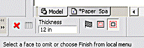
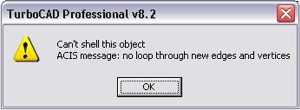
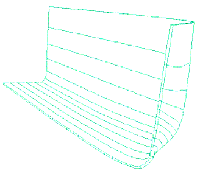
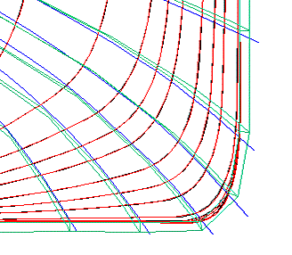
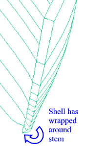
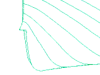

| HOME
Hull Lofting Tutorial: |
| Start: 0 Set the first dxf: 1 Paste other dxf's: 2 Loft profiles: 3 Loft test: 4 Loft Better: 5 Shelling: 6 Full Length: 7 Keel, Mirror & Render: 8 |
| Background: |
| The ship lines were created by Dr Allen Magnuson in Feb 2005 using Vacanti Prolines LE. The data was exported in 2D dxf format, then traced in TurboCad Pro 8.2. Hull is based on the proportions of Noah's Ark according to Genesis 6:15. Tutorial by Tim Lovett Feb 05. |
STEP 6: Shelling
1. Shell test
The loft represents the planking of the hull. More specifically, the INSIDE surface (where planking meets the frames). To give the loft some thickness, the Shell command is used. Here's how;
- Modify > Shell Solid
- Select the loft
- In the Shell settings menu (bottom of TC screen), set the wall thickness to 12 inches, and pick "Shell Outwards". Then Finish.

Error Message?

Try shelling the other way (Shell Inside). In my case it worked this time, and the hull looks like this... (using Hidden Line render)

Wait a minute. Let's check the bow elevation view to see which way we really shelled...

Yes, the Shelled Loft (green) is definitely outside the loft profiles (red). This means the shell is actually outward. It is not always easy fot a computer to work out what is the inside and the outside of an object - in this case it got it round the wrong way.
2. Repair bow details
The fact that one of the lofts didn't work is not good. It is caused by poor loft geometry at the base of the bow. The transition from Station 1 to the bottom of the bow profile is awkward and must be tweaked to give a smooth loft. By making a thicker shell you can see what is going on. Here it is again at 24 inches thick...

This means the loft was turning inwards as it approached the stem - so station 1 must be brought inwards, or the bow pushed outwards.
- Tweak station 1 and/or bow profile
- Rebuild the loft (the first 4 or 5 profiles should be an adequate test
- Test the shell
Repeat above steps until the loft will shell correctly. The lowest portion of the stem is difficult to smooth out. Another work-around is to bring this detail inboard a little to ensure it is completely hidden inside the stem post (when it is added later).

|
Tim Lovett © 2005 | All Rights Reserved| http://www.worldwideflood.com |